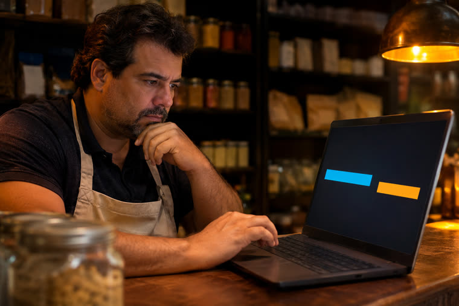

Fuente oficial: «La Receita Federal publica su primer código fuente abierto en GitHub» (en portugués), noticia del 16/11/2026.El logotipo está aquí solo para mostrar de dónde viene la noticia. Esta página es del INEMA: no es de la Receita y la Receita no la revisó ni la avala.
La Receita Federal abrió al público el programa que calcula los nuevos impuestos de la reforma tributaria: la CBS (federal, en lugar del PIS y de Cofins), el IBS (de los estados y municipios) y el Impuesto Selectivo (que grava bebidas, cigarrillos y otros productos). El programa ya se podía descargar desde la Plataforma CBS desde 2025; la novedad de noviembre es que se publicó en GitHub, con cada versión y cada corrección a la vista de todos, y cualquiera puede ejecutarlo y comprobar los resultados. Esta página explica qué pasó en noviembre, muestra la misma compra calculada con la alícuota del ejemplo de la Receita (8,8%, solo un número de prueba) y con la recomendada por el TCU (11,3%, aún no votada), y cuenta qué cambia para ti. Solo tienes que leer; si quieres hacer el cálculo, encontrarás cómo en «Compruébalo tú mismo».
La misma compra, R$ 16,12 de diferencia
Tomamos el ejemplo que la propia Receita publica en la documentación del programa y lo calculamos dos veces, cambiando solo un número: la alícuota de la CBS.
🧾 Cálculo A: CBS del 8,8% → R$ 56,76
Es la alícuota que la Receita usó en el ejemplo de la documentación. Sirve para probar el programa; no es una propuesta de alícuota. El total coincide con el publicado en la documentación oficial.
🧾 Cálculo B: CBS del 11,3% → R$ 72,88
Es la alícuota de referencia que el TCU (Tribunal de Cuentas de la Unión) calculó para 2027 y envió al Senado. Aún no se ha aprobado. Con ella, la CBS de la misma compra aumenta un 28%.
🔎 Qué muestra el cálculo, artículo por artículo
- Arroz de la canasta básica (R$ 100): CBS cero en ambos cálculos. La ley establece una reducción del 100% para la canasta básica, así que la alícuota no importa.
- Cerveza (R$ 150): primero se aplica el Impuesto Selectivo (R$ 15) y la CBS se calcula sobre R$ 165. El resultado es R$ 14,52 o R$ 18,64.
- Cuota escolar (R$ 1.200): la educación tiene una reducción del 60% en la alícuota. El resultado es R$ 42,24 o R$ 54,24. El programa explica el motivo en portugués y cita el artículo de la ley (art. 129).
- Carne con el código de producto incorrecto: el programa no calcula y avisa que el código no coincide con la clasificación. Es el tipo de error que puede provocar el rechazo de la factura; además, en el cálculo directo, un artículo así hace que el programa rechace toda la compra.
La base de la compra es R$ 1.465,00. En ambos cálculos también aparece R$ 0,64 de IBS, que en 2027 es solo una prueba del 0,1%. Cálculo realizado el 23/11/2026 con la versión 1.7.2 del programa de la Receita.
Un comprobante real del supermercado, así se ve en enero
Una compra de R$ 1.512,15 en un supermercado de RS, el 06/11/2026: 121 artículos. Pasamos cada renglón del comprobante por el programa de la Receita Federal, como si la compra se hiciera en enero de 2027, cuando comienza la CBS.
🧾 CBS del 8,8% → R$ 89,14
Con la tasa de prueba del ejemplo de la Receita Federal. Es el 5,9% del valor de la compra.
🧾 CBS del 11,3% → R$ 114,30
Con la tasa que recomendó el TCU, aún no aprobada. Es el 7,6% del valor de la compra. La diferencia entre ambas es de R$ 25,16.
🔎 Lo que muestra el cálculo, producto por producto
- La canasta básica queda con CBS en cero: pollo, leche, café, azúcar, sal, harina de trigo y sagu, por un total de R$ 396,04 en el comprobante. El programa indica el motivo: tasa cero, artículo 125 de la ley.
- Algunos alimentos tienen una reducción del 60% en la tasa: aceite de soya, bebida láctea, yogur y fécula de maíz (R$ 173,74). Los 19 aceites de soya (R$ 132,81) pagan R$ 4,67 de CBS con una tasa del 8,8%, y no R$ 11,69.
- Lo que más pesa son los productos que no son básicos: las 81 leches condensadas (R$ 404,19) por sí solas generan R$ 35,57 o R$ 45,67 de CBS, y las 81 cremas de leche, R$ 17,75 o R$ 22,79. La gelatina, las salsas, la mayonesa y el chocolate en polvo también pagan la tasa completa.
- La trampa de las conservas: el maíz y las arvejas en lata y las papas hilo parecen "verduras", pero la reducción de la ley solo aplica a las hortalizas cocidas sin sal ni otros ingredientes. Las conservas tienen sal, así que quedan sujetas a la tasa completa.
La CBS no se suma al precio de hoy: reemplaza al PIS y a la Cofins, que ya están incluidos en esos R$ 1.512,15. El cálculo muestra cuánto de la compra pasa a ser CBS, con el nombre de cada impuesto indicado artículo por artículo.
El comprobante no incluye el código fiscal (NCM) de los productos: INEMA eligió el código de cada uno y verificó su clasificación en la tabla del propio programa. Supusimos un supermercado en el régimen normal de impuestos (el cálculo es distinto en el Simples Nacional) y usamos el valor de cada renglón del comprobante como base. En ambos cálculos también aparece R$ 0,70 de IBS, la prueba del 0,1% para 2027. Es una simulación, no un comprobante fiscal. Ejecutado el 24/11/2026, con la versión 1.7.2 del programa de la Receita Federal; la entrada y la respuesta del programa están en el kit, en kit/exemplos.
Noviembre de 2026, en orden
La reforma tributaria (Ley Complementaria 214/2025) sustituye cinco impuestos al consumo por tres nuevos, de forma gradual hasta 2033. El primer gran paso llega en enero. Verificado el 24/11/2026.
- 09/11 · La Receita abre los canales de liquidación de la CBS
Los canales por los que los sistemas de las empresas enviarán los débitos y créditos del nuevo impuesto. - 10/11 · El TCU entrega al Senado la alícuota del 11,3%
El cálculo detallado dio 11,3468%. Es la alícuota de referencia: la cifra que mantiene la recaudación nueva al mismo nivel que la del PIS y Cofins. El Senado la fija mediante resolución antes del 15 de diciembre. - 12 y 13/11 · Una orden autoriza la publicación del código
La Orden Cotec n.º 342 se publica en el Diario Oficial: permite publicar tres programas con licencia libre (MIT), registra la «huella digital» de cada versión y advierte que no hay soporte y que el código no tiene fuerza de ley. - 16/11 · La Receita anuncia el código abierto en GitHub
GitHub es el sitio donde los programadores guardan y comparten código. Ahora cualquiera puede ver las versiones y el historial, y señalar errores. - 17/11 · Hacienda habla de una alícuota efectiva media del 8,5%
Es otra cifra: el promedio de lo que se paga realmente después de las reducciones. No significa que todos los precios vayan a cambiar un 8,5%. - 18/11 · El Senado pide al TCU la metodología
La Comisión de Asuntos Económicos aprobó una solicitud para conocer los estudios detrás del 11,3%. - Del 18 al 20/11 · Las dos calculadoras ya tienen nuevas versiones
La del régimen regular (versión 1.7.2) corrigió el redondeo: antes, el total de la factura podía no coincidir con la suma de los artículos. La del Simples Nacional se publicó en la versión 1.0.2. Es una prueba de que el código se corrige públicamente. - Hasta el 15/12 · El Senado decide la alícuota
Cuando se publique, el cálculo B (u otro) dejará de ser una simulación. - Enero de 2027 · Comienza la CBS
En lugar del PIS y de Cofins. El IBS entra solo como prueba del 0,1% y comienza a aplicarse el Impuesto Selectivo.
Qué cambia para tu bolsillo y tu trabajo

🛒 Quienes compran
La CBS no es un impuesto adicional sobre todo: reemplaza al PIS y a Cofins, que ya están incluidos en los precios. Lo que cambia es el importe, y depende de la alícuota que fije el Senado y de las reducciones aplicables a cada producto, como las del arroz y la educación en los cálculos anteriores.

🏢 Quienes venden o tienen una empresa
El sistema que emite tus facturas debe calcular correctamente a partir de enero. Ahora puedes comprobarlo: compara la misma venta en tu sistema y en el programa de la Receita, y verifica si el importe coincide.

📒 Contadores
Una segunda opinión independiente del sistema del cliente, con el motivo explicado y el artículo de la ley. Es útil para elaborar informes y explicar al cliente por qué dio ese resultado.
Y una alerta antes del rechazo: la carne «bloqueada» en los cálculos anteriores tiene un código de producto (NCM) que no coincide con la clasificación del impuesto; es el mismo error que haría que se rechazara la factura.
💻 Quienes desarrollan sistemas
La referencia oficial para probar tu propio código. Puedes usar la licencia MIT, siempre que no uses el nombre de la Receita para afirmar que el producto es oficial.
¿Quieres hacer el cálculo con tus ventas?
Hay dos opciones: la calculadora online de la Receita, para una venta a la vez, sin instalar nada; y el kit gratuito Calculadora abierta, para comparar muchas ventas con tu sistema, con ayuda de una IA en tu computadora (Claude Code o Codex) o de tu equipo de TI.
🌐 Sin instalar nada: la calculadora online de la Receita
La Receita mantiene la misma calculadora en un sitio web, sin iniciar sesión. El 24/11/2026 ejecutaba la versión 1.7.2, la misma que la del código abierto. Allí puedes calcular una venta a la vez, y los datos que escribas se envían al sitio de la Receita.

🧮 Calculadora abierta: prueba el motor oficial
La guía explica, en lenguaje sencillo, cómo pedirle a la IA que ejecute la calculadora, haga los dos cálculos y compare cada artículo con tu sistema, marcando «igual» o «diferente».
También puedes compartirla con tu equipo de TI o con el proveedor del sistema de facturación.
De dónde procede cada dato
El código es de la Receita Federal, desarrollado junto con Serpro, la empresa tecnológica del gobierno federal. Las explicaciones y los cálculos de esta página son del INEMA, que no está vinculado a la Receita.
📰 El anuncio de la Receita
Por qué se publicó: transparencia, seguridad jurídica y un componente oficial que las empresas pueden integrar en sus sistemas.
📜 La orden
Orden Cotec n.º 342, del 12/11/2026: autoriza la publicación de los tres programas y establece que no hay soporte ni efecto legal.
💾 El código
Calculadora del régimen regular · del Simples Nacional · generador de facturas de servicios en PDF.
⚖️ La alícuota del 11,3%
El TCU entrega el estudio al Senado (10/11) y la comisión pide la metodología (18/11).
Agencia del Senado (en portugués) · Contábeis (en portugués)
💬 El 8,5% de Hacienda
El ministro estima la alícuota efectiva media en una audiencia en el Senado (17/11).
🧪 Los dos cálculos
Los hicimos el 23/11/2026, con las versiones, los tiempos y las respuestas completas del programa.
Antes de sacar conclusiones
¿Mis precios subirán un 11,3%?
No se puede afirmar eso. La CBS sustituye al PIS y a Cofins, que ya están incluidos en los precios, y muchos productos y servicios tienen reducciones. El cálculo cambia en cada caso; por eso conviene hacer el tuyo.
¿Ya se decidió la alícuota?
No. El 24/11/2026, el Senado aún no había votado. El plazo es el 15 de diciembre. Hasta entonces, el programa marca el resultado de 2027 como «simulado».
¿Qué son la CBS, el IBS y el Impuesto Selectivo?
CBS: impuesto federal al consumo que sustituye al PIS y a Cofins. IBS: impuesto de los estados y municipios que sustituye al ICMS y al ISS; solo empieza a aplicarse realmente a partir de 2029. Impuesto Selectivo: un recargo sobre productos perjudiciales para la salud o el medio ambiente, como las bebidas y los cigarrillos.
¿El resultado del programa tiene valor legal?
No. La propia orden dice que el código no tiene efecto legal y que no cuenta con soporte. Es una referencia útil para comprobar los cálculos; la responsabilidad por el impuesto sigue siendo de quien emite la factura.
¿Tengo que hacer algo?
Si solo compras, no. Si vendes, pregunta al proveedor de tu sistema si ya calcula la CBS de 2027 y comprueba algunas ventas antes de enero.
¿Cuánto cuesta?
Leer esta página, el código de la Receita y el kit Calculadora abierta es gratis. La forma más sencilla de ejecutarlo es con Claude Code o Codex, incluidos en las suscripciones de pago de Claude o ChatGPT.
Y tú: ¿ya sabes qué parte del precio de lo que compras corresponde a impuestos o lo descubrirás en la factura de enero? Gratis en inema.club, directo en internet.